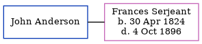

The child of William Belsey (a laborer) and Anne, William Belsey, the four times great-uncle of Nigel Horne, was born c. 1794 and baptized in Ickham, Kent, England on Aug 31, 1794.
Parents
Family Tree

Generated by ged2site. Last updated on Jun 11, 2024